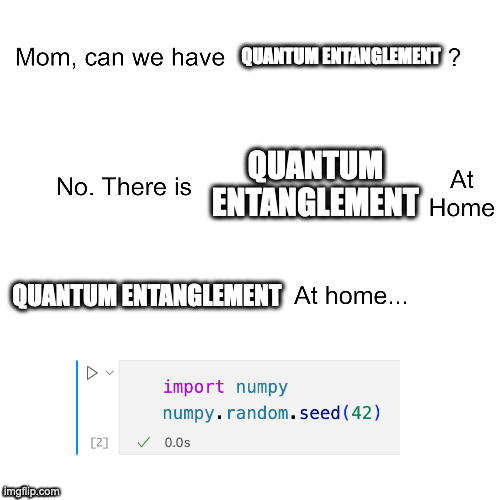
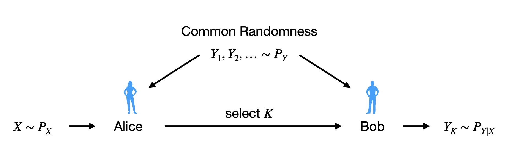

An Introduction to Relative Entropy Coding and Its Applications
Gergely Flamich
31/07/2024
gergely-flamich.github.io
In Collaboration With


why care?
transform coding

realistic lossy compression

Right-hand image from Careil et al. [1]
differentially private federated learning

relative entropy coding
- \(X, Y \sim P_{X, Y}\)
- Given \(X \sim P_X\), encoder sends code \(C\) so that decoder can compute \(Y \sim P_{Y \mid X}\)
- Li and El Gamal [2]:
\[ {\color{red} I[X; Y]} \leq \mathbb{E}[|C|] \leq {\color{red} I[X; Y]} + {\color{blue} \log (I[X; Y] + 1) + 4} \]
- short codelength
lossy source coding
Usually:
- \(f^{-1} \circ \lfloor \cdot \rceil \circ f\)
- \(f\) controls distortion
Now:
- \(f^{-1} \circ (f + \epsilon)\)
- \(f\) controls \(P_{Y \mid X}\)
common randomness
solution 1: dither
Common randomness: \(U \sim \mathrm{Unif}[-1/2, 1/2]\)
\[ \lfloor x + U \rceil - U \sim \mathrm{Unif}[x - 1/2, x + 1/2] \]
- Encoder: receive \(X \sim P_X\), send \(K = \lfloor X + U\rceil\)
- Decoder: compute \(Y = K - U\)
- ✅ Fast
- ❌ Can only simulate uniform distributions.
solution 2: selection sampling
- ✅ Can simulate any distribution
- ❌ Slow
Greedy Poisson Rejection Sampling
- Sampling as search
- Exploit structure to accelerate search
- \(Q \gets P_{Y \mid X}\)
- \(P \gets P_{Y}\)
GPRS with \(P = \mathcal{N}(0, 1), Q = \mathcal{N}(1, 1/16)\)

GPRS with \(P = \mathcal{N}(0, 1), Q = \mathcal{N}(1, 1/16)\)

GPRS with \(P = \mathcal{N}(0, 1), Q = \mathcal{N}(1, 1/16)\)

GPRS with \(P = \mathcal{N}(0, 1), Q = \mathcal{N}(1, 1/16)\)

GPRS with \(P = \mathcal{N}(0, 1), Q = \mathcal{N}(1, 1/16)\)

GPRS with \(P = \mathcal{N}(0, 1), Q = \mathcal{N}(1, 1/16)\)

GPRS with \(P = \mathcal{N}(0, 1), Q = \mathcal{N}(1, 1/16)\)

Fast GPRS with \(P = \mathcal{N}(0, 1), Q = \mathcal{N}(1, 1/16)\)

Fast GPRS with \(P = \mathcal{N}(0, 1), Q = \mathcal{N}(1, 1/16)\)

Fast GPRS with \(P = \mathcal{N}(0, 1), Q = \mathcal{N}(1, 1/16)\)

Fast GPRS with \(P = \mathcal{N}(0, 1), Q = \mathcal{N}(1, 1/16)\)

Fast GPRS with \(P = \mathcal{N}(0, 1), Q = \mathcal{N}(1, 1/16)\)

Fast GPRS with \(P = \mathcal{N}(0, 1), Q = \mathcal{N}(1, 1/16)\)

Analysis of faster GPRS
Now, encode search path \(\pi\).
\(\mathbb{H}[\pi] \leq I[X; Y] + \log(I[X; Y] + 1) + \mathcal{O}(1)\)
\(\mathbb{E}[\lvert\pi\rvert] = I[X; Y] + \mathcal{O}(1)\)
This is optimal.
Computationally Lightweight ML-based data compression
Data Compression with INRs

Image from Dupont et al. [4]
- computationally lightweight
- short codelength
COMBINER
COMpression with Bayesian Implicit Neural Representations

Image from Blundell et al. [7]
💡Gradient descent is the transform!
COMBINER

COMBINER

Theory: What next?
- Might not need perfect solution: think of error correcting codes (e.g. LDPC)
- Exploit different types of structure
- Duality between source and channel coding
Applications: What next?
- Realism constraints for INR-based compression
- Scale to high-resolution/high-volume data
Take-home messages
- Relative entropy coding is a stochastic alternative to quantization for lossy source coding
- Currently two flavours: dither-based, and selection sampling
- Greedy Poisson rejection sampling is an optimal selection sampler
- Implicit neural represenations are an exciting, compute-efficient approach to data compression with huge potential
References I
- [1] Careil, M., Muckley, M. J., Verbeek, J., & Lathuilière, S. Towards image compression with perfect realism at ultra-low bitrates. ICLR 2024.
- [2] C. T. Li and A. El Gamal, “Strong functional representation lemma and applications to coding theorems,” IEEE Transactions on Information Theory, vol. 64, no. 11, pp. 6967–6978, 2018.
- [3] E. Agustsson and L. Theis. "Universally quantized neural compression" In NeurIPS 2020.
References II
- [4] E. Dupont, A. Golinski, M. Alizadeh, Y. W. Teh and Arnaud Doucet. "COIN: compression with implicit neural representations" arXiv preprint arXiv:2103.03123, 2021.
- [5] G. F., L. Wells, Some Notes on the Sample Complexity of Approximate Channel Simulation. To appear at Learning to Compress workshop @ ISIT 2024.
- [6] D. Goc, G. F. On Channel Simulation with Causal Rejection Samplers. To appear at ISIT 2024
References III
- [7] C. Blundell, J. Cornebise, K. Kavukcuoglu and D. Wierstra. Weight uncertainty in neural network. In ICML 2015.